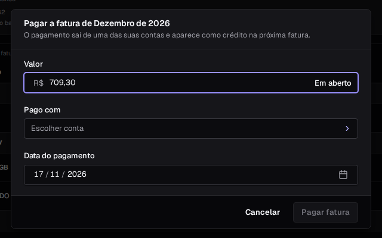
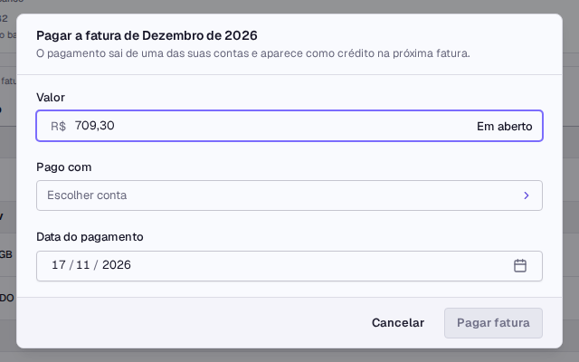
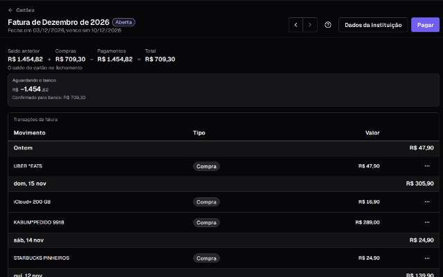
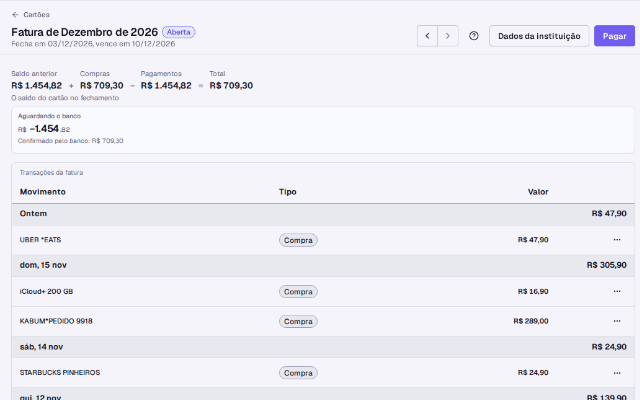

A fatura reúne as compras de um ciclo do cartão. Ela fecha numa data e vence alguns dias depois. O que cada número da fatura significa está em A tela da fatura.
Registrar o pagamento


Depois do pagamento. O valor sai da conta escolhida e aparece como crédito na próxima fatura. Um pagamento menor que o total deixa o restante em aberto, e a tela mostra quanto fica.
Pagar em parcelas
Quando a instituição parcela a fatura, escolha Financiar na página da fatura. Informe o número de parcelas e o valor de cada uma. O valor em aberto vira parcelas cobradas nas próximas faturas, e a tela mostra quanto do total é juros.
Conferir com a instituição
Quando a fatura da instituição chegar, compare o total com o do equori. Escolha Conferir na página da fatura e digite o total que a instituição mostra. Se os totais forem diferentes, registre os dados da instituição para que datas e transações sigam a fatura dela.

